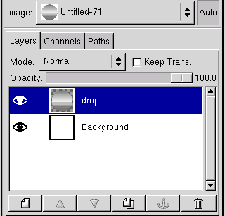
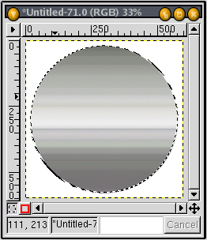

The first thing we need to do is to create a new image. Go ahead and create a new image (File>New) and give it a width of 600 pixels and a height of 600 pixels. When we are done with the image it will be considerably smaller, or at least somewhat shorter, so when you do this to actually put somewhere, make sure you start out big. It will help you avoid problems in the future.
Next create a new layer in your new image, and call it drop (make sure the Layer Fill Type is Transparent). Using the Elliptical Selection tool, select a perfect circle taking up most of the width and height.
Now select the gradient tool, and in the Tool Options, choose Blend>Custom Gradient and Gradient>Linear. If you don't already have the Gradients Dialog open, open it now, and choose the Brushed Aluminium gradient. With the gradient tool still selected, drag your gradient straight down from the top of the circle to the bottom of the circle. You should end up with something that looks like this:
